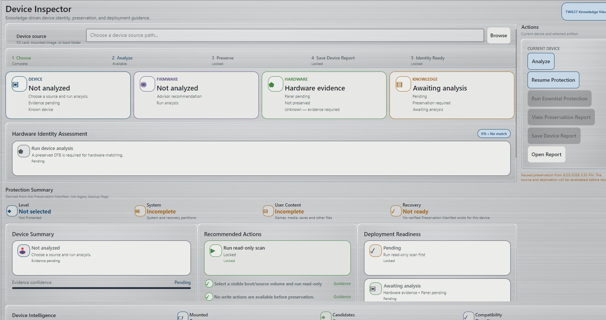

1. Connect the original media
Insert the original SD card or connect the source media to the computer. Do not rename, reorganize, delete or “clean up” files on the original first.
2. Open Device Inspector
In RLB, select Device Inspector. This workspace brings together source selection, device identity, protection state, recommended actions and deployment readiness.

3. Choose the source RLB should inspect
Use the Device source field at the top of Device Inspector and select the source that represents the device media you want RLB to examine.
The Device Inspector interface supports sources such as an SD card, mounted image or boot folder. Select the source that corresponds to the original media you are protecting.
4. Run Analyze
Run Analyze once the correct source is selected. This is the evidence-gathering stage. RLB examines the source so it can reason about device identity, partitions, content and the protection that may be required.
5. Review the device result before relying on it
After analysis, review the Device, Firmware, Hardware and Knowledge areas as well as the Hardware Identity Assessment.
Ask a simple question: Does this result make sense for the device in front of you?
If the identity looks wrong or unexpectedly generic, do not treat device-specific recommendations as authoritative simply because Analyze completed.
6. Review the Protection Summary
The Protection Summary shows the protection state of major areas such as system/recovery material and user content. Before a new preservation is established, incomplete or not-ready states are expected.
A Device Report, an identified device, or an available action is not the same thing as a completed preservation.
7. Follow RLB's protection recommendation
When the required prerequisites are satisfied, Device Inspector will make the appropriate protection action available. For the original device workflow, that is the point at which Essential Protection becomes relevant.
If RLB needs destination information or other prerequisites, complete those through the current UI rather than trying to work around a locked stage.
8. Review Analyze / Preview before confirmed reconciliation work
When a workflow includes reconciliation, RLB separates the process into Analyze → Preview → Confirm → Apply. Review what RLB predicts before approving the Apply stage.
The preview can classify content into outcomes such as Copy New, Existing, Conflict / Review and Duplicate playable.
9. Run Essential Protection and leave the media connected
Once you have reviewed the protection plan and RLB has made the protection operation available, start the operation and allow it to run.
Large devices can contain many thousands of files. Keep both the original source and the protection destination connected and stable while the task is active.
10. Verify the terminal result
Do not call the original device safely preserved just because the progress UI disappeared or a Device Report exists. Confirm the actual preservation state.
11. Keep the original card
Especially during Beta, keep the original card intact after the preservation finishes. It remains your last-resort physical reference while you validate future recovery or deployment workflows.
What comes next?
Once the device is protected, RLB can use the preserved device identity and verified content as the foundation for later decisions. That includes retained-content reconciliation and, as Deployment matures, preparing replacement media.